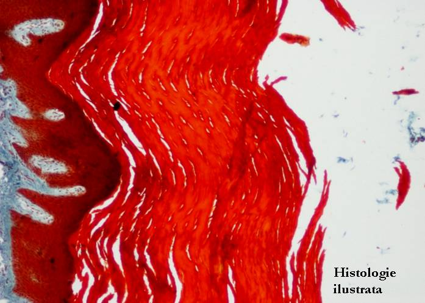
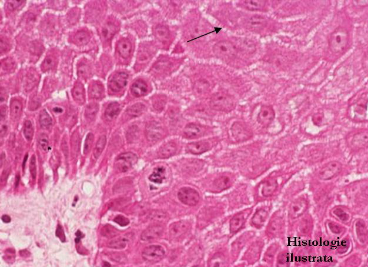
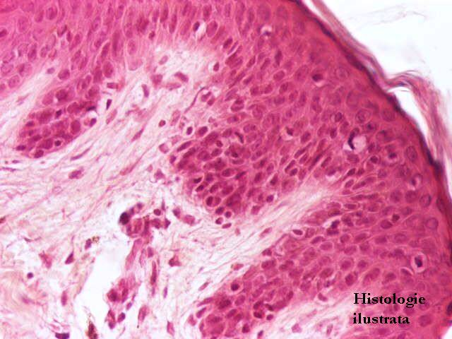
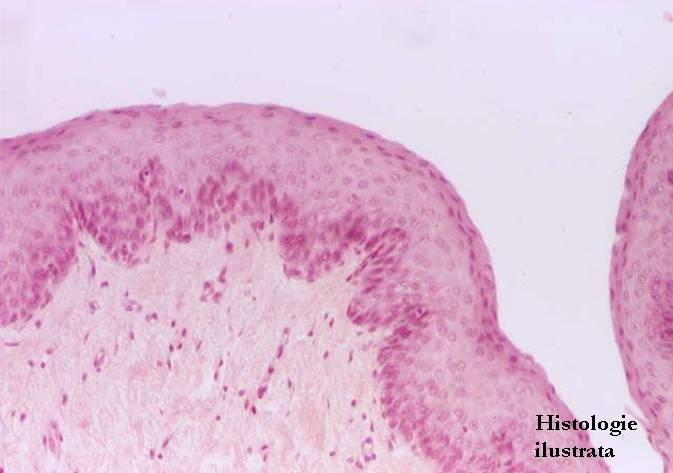
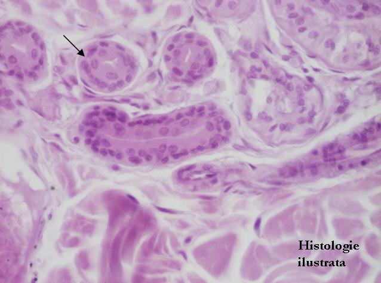

Chap.1 - Tissu épithélial
1.1. Épithéliums de revêtement (tapissants)
Épithéliums stratifiés




Fig. 19 - Épithélium stratifié pavimenteux kératinisé (épiderme épais) – peau,
T.S. X 40
Fig. 20 - Épiderme épais – couche basale, couche épineuse, T.S. X 200
Fig. 21 - Épiderme épais – couche basale, couche épineuse – T.S. X 400
Fig. 22 - Épithélium stratifié pavimenteux kératinisé – desmosomes,
H.E. X 400



Fig. 23 - Épiderme épais – couche granuleuse, couche cornée, T.S. X 100
Fig. 24 - Épiderme épais – couche granuleuse, couche cornée – T.S. X 400
Fig. 25 - Épithélium stratifié pavimenteux kératinisé (épiderme mince) – peau,
H.E. X 100
Fig. 26 - Épithélium stratifié pavimenteux kératinisé (épiderme mince) – peau,
H.E. X 200





Fig. 27 - Épithélium stratifié pavimenteux non kératinisé – œsophage, H.E. X 100
Fig. 28 - Épithélium stratifié pavimenteux non kératinisé – exocol, H.E. X 100
Fig. 29 - Épithélium bistratifié cubique – canaux de la glande sudoripare, H.E. X 200
Fig. 30 - Épithélium stratifié cylindrique – canal extralobulaire de glande salivaire,
H.E. X 40


Fig. 31 - Épithélium stratifié cylindrique – canal de glande salivaire – H.E. X 400